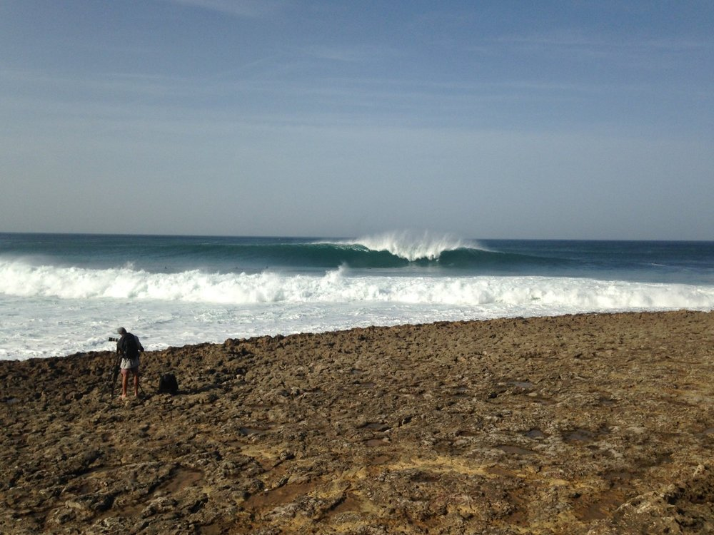

Coxos Beach
Coxos is considered one of the best waves in Portugal, a perfect, long right that breaks over a slope that holds big swells and can make good tubes. It's not a wave for beginners and has a high degree of difficulty getting in and out depending on the tide. Respect the locals and avoid problems.
- TideHalf-dry
- SwellWest
- WindEast and Northeast
- DifficultyAdvanced
- LocalismMedium/Heavy